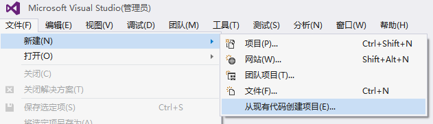
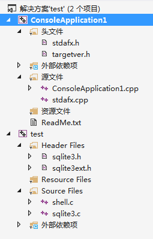
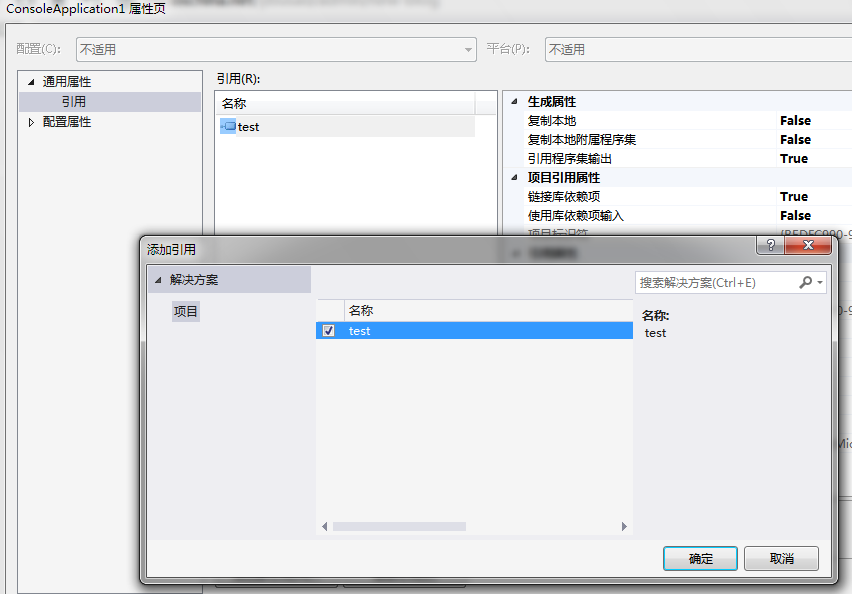
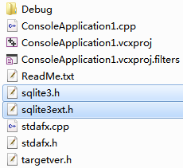

SQLite is a software library that implements a self-contained, serverless, zero-configuration, transactional SQL database engine. SQLite is the most widely deployed SQL database engine in the world. The source code for SQLite is in thepublic domain.
下载源代码
可以在下面的链接中找到“Source Code”一栏：
http://www.sqlite.org/download.html
当前提供了两个下载源，我们选择第一个
sqlite-amalgamation-3080402.zip
这个是将代码整合过的，解压后应该有下面几个文件：
- shell.c
- sqlite3.c
- sqlite3ext.h
- sqlite3.h
其中sqlite3.c源文件很大。可以看得出确实是整合在一起的，不过不影响我们编译。
编译源代码
这里使用Visual Studio 2013进行编译，启动VS2013，选择从现有代码创建项目，如图：

项目类型为Visual C++，项目文件位置选择解压的源代码目录，项目名称随便打一个，其他选项默认，下一步。
项目类型选择静态库lib(如果你以后要直接把SQLite库打包进exe)，或者选择动态链接库(会独立一个SQLite.dll)，这里就选择静态库lib。
然后下一步，下一步，完成就行了。
进入项目后，可以在解决方案资源管理器中查看添加进入的头文件和源文件。
选择Debug或者Release模式进行编译，这个过程很快就完成了，编译成功会得到响应的lib文件。
1 | 1>------ 已启动生成: 项目: test, 配置: Debug Win32 ------ |
创建项目
为了方便操作，我们可以直接在当前解决方案中添加一个项目（这里选择Win32控制台应用程序），如图：

进入新建项目的属性页，添加引用，因为同在一个解决方案下，会找到SQLite的库引用，就不用再去用预处理导入lib文件了。

然后需要包含sqlite的头文件，这里图方便就直接把sqlite项目的头文件Copy过来，注意不要在VS中复制粘贴，因为那是虚链接，我们直接在磁盘进行拷贝，然后在VS中添加现有项就OK。

然后按照官方的演示，直接照抄示例代码如下：
1 | // ConsoleApplication1.cpp : 定义控制台应用程序的入口点。 |
编译运行，输入参数，然后查看效果。
下面是官方提供的API参考文档：
http://www.sqlite.org/c3ref/intro.html
这里就不一一演示了。